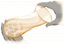

Birth Control Problem Set
Problem 3: Good STD protection
Tutorial to help answer this questionWhich barrier method lines the vagina entirely, partially shields the perineum and is a good STD protection.
A. Male Condom
B. Spermicides
C. Female condom
Female condom
|  | The female condom is a thin polyurethane sheath that contains two flexible rings. One ring serves as an internal anchor. The other ring remains outside the vagina after insertion. It provides a physical barrier that lines the vagina entirely and partially shields the perineum. |
|
Failure rate
Female condoms have a failure rate of 5% to 21% (effective 79% to 95% of the time) They provide good STD protection, but they are more expensive than the male condom and are somewhat bulky. |
|
Male condom
| The male condom is a thin rubber sheath that fits over the erect penis. It serves as a physical barrier that does not allow sperm to come in contact with the vagina, but it does not shield the perineum. | |
|
Failure rate
Male condoms have a failure rate of 2% to 12% (effective 88% to 98%.) They offer effective protection against unwanted pregnancies and, if used properly, are very good protection for STDs transmitted by body fluid. They offer limited protection against STDs transmitted by direct contact if the infection is located on parts of the body other than the penis. |
|


University of Arizona
Tuesday, December 2,1997
Contact the Development Team
http://biology.arizona.edu
All contents copyright © 1998. All rights reserved.